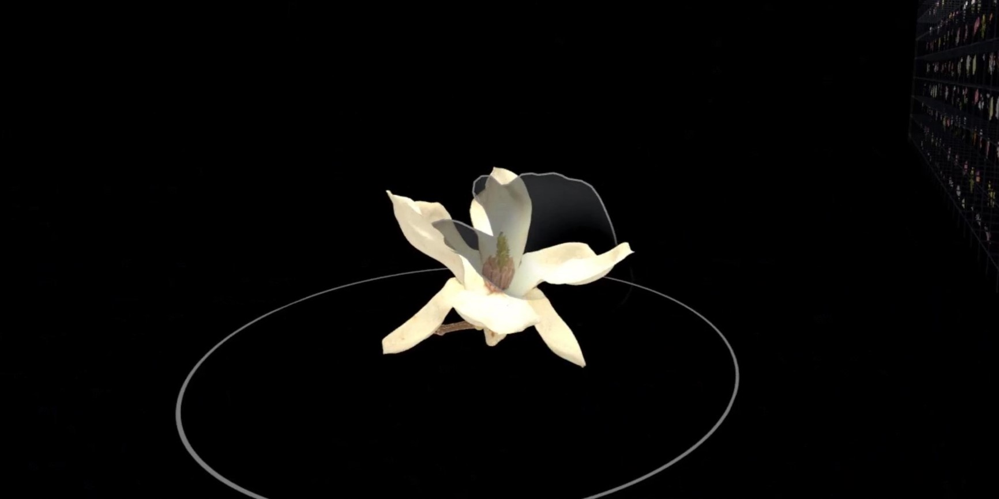
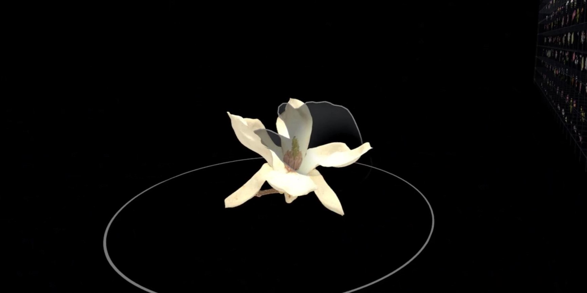

High-fidelity 3D models enable detailed, anatomy-based interactions, allowing users to deconstruct plants to explore internal structures and evolutionary traits. Through advanced Unity rendering and narrated insights, The Blooming Library transforms botanical education into a restorative, immersive "textbook of the future."
*Botanical models provided by Yuichi Kano under a CC0 public domain license.
 
